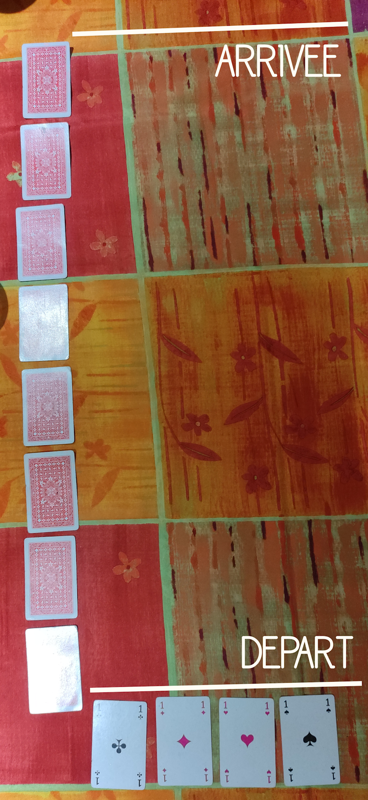

PMU

Sommaire
Présentation
2 ou plus
5 minutes
5/10
-
1 paquet de 52 cartes
(sans joker)
PMU est un jeu de course de chevaux. Pariez sur le bon cheval et espérez qu'il soit en tête.
Préparation
- Désignez un RJ.
- Le RJ retire les du jeu, ils symbolisent les chevaux.
- Le RJ place les 4 chevaux en ligne les uns à côtés des autres.
- Le RJ mélange toutes les autres cartes.
- Le RJ place 7 cartes face cachée en colonne à côté des chevaux à partir de la ligne d'au-dessus.
- Le reste des cartes forment une pile face cachée que le RJ garde avec lui.
- Vous êtes prêt à jouer.
Règles
Chaque joueur choisi un cheval (signe , , ou ) et pari un nombre de gorgées qu'il doit boire tout de suite.
Le RJ retourne les cartes du dessus de la pile les unes après les autres et fait avancer d'une ligne le cheval correspondant au même signe (, , ou ).
À chaque fois qu'un cheval avance et est le seul 1er, tous les joueurs qui ont parié sur ce cheval distribuent chacun un nombre de gorgées égal à la différence de lignes entre le 1er cheval et le 2ème.
À chaque fois qu'un cheval avance et qu'un cheval est le seul 4ème, tous les joueurs qui ont parié sur ce cheval boivent chacun un nombre de gorgées égal à la différence de lignes entre le 3ème cheval et le 4ème.
Une fois que tous les chevaux sont passés sur une ligne, le RJ retourne la carte face cachée de cette ligne et fait descendre le cheval correspondant au signe de cette carte (, , ou ).
Lorsqu'un cheval dépasse la ligne d'arrivée :
Si il est en 1ère position, tous les joueurs qui on pariés sur lui distriuent chacun le double du nombre de gorgées qu'ils ont respectivement pariés.
Si il est en 2ème position, tous les joueurs qui on pariés sur lui distriuent chacun le nombre de gorgées qu'ils ont respectivement pariés.
Si il est en 3ème position, tous les joueurs qui on pariés sur lui boivent chacun le du nombre de gorgées qu'ils ont respectivement pariés.
Si il est en 4ème position, tous les joueurs qui on pariés sur lui boivent chacun le double du nombre de gorgées qu'ils ont respectivement pariés.
Un cheval qui a terminé la course ne peut plus avancer ni reculer.
Le jeu s'arrête lorsque tous les chevaux ont franchient la ligne d'arrivée ou lorsqu'il n'y a plus de carte dans la pile.
Variantes
Vous pouvez faire en sorte que lorsqu'un cheval avance et qu'il est le 1er à arriver sur une ligne qui n'a pas déjà fait distribuer, les joueurs qui ont pariés sur lui distribuent chacun un nombre de gorgées égal à la différence de lignes entre le 1er cheval et la ligne 0.
Vous pouvez faire en sorte que lorsqu'il n'y a plus de carte dans la pile, vous reprenez toutes les cartes retournés, les mélangez et continuez le jeu.
Anecdotes
Ce jeu est l'un des préférés du fou... Bien qu'il ait une malchance légendaire à celui-ci...